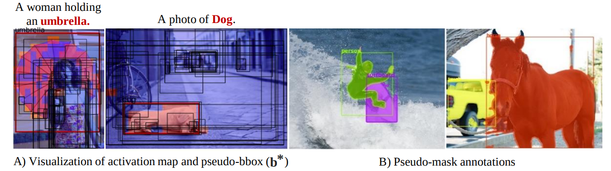
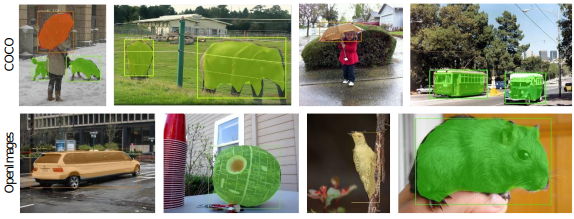

Overview

- Our work proposes a manual-mask-free approach for open-vocabulary instance segmentation leveraging a pre-trained vision-language model.
- Specifically, we generate pseudo-masks annotations for objects of interest from image-caption pairs using pre-trained VLM and weakly-supervised proposal and segmentation network.
- These generated pseduo-mask annotations are then used to train an instance segmentation model, completely eliminating the need for human-provided box-level or pixel-level annotations.
Pseduo-mask Generation Framework
Pseduo-mask visualizations

(A) Visualization of activation maps generated to cover the object of interest (woman and dog), which were used to select the best bounding box proposal.
(B) Visualization of generated pseudo-mask annotations generated using our pipeline.
Mask-rcnn predicition visualizations

The top and bottom rows of the visualization display the predictions generated by the Mask-RCNN model, which was trained on pseudo-masks created from two datasets: COCO and Open Images, repectively.
By training on a large number of pseudo-masks, the Mask-RCNN model is able to filter out any noise present in the masks, leading to improved predictions that include complete masks and tight bounding boxes.
BibTeX
@article{vs2023open,
title={Open-Vocabulary Instance Segmentation without Manual Mask Annotations},
author={VS, Vibashan and Yu, Ning and Xing, Chen and Qin, Can and Gao, Mingfei and Niebles, Juan Carlos and Patel, Vishal M and Xu, Ran},
journal={arXiv preprint arXiv},
year={2023}
}